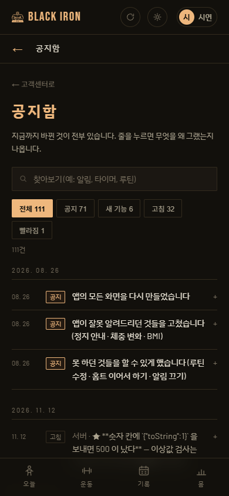

정석 · 전수 점검 · 11/12
기능이 제대로 도는가, 그리고 어디가 깨졌는가. 세 자리에서 봤다 — 검사 전부 · 사용자 여정(가입부터 탈퇴까지 진짜 서버에) · 화면 전수(헤드리스 크롬, 폰 폭 390). 서버와 화면은 제 전용(임시 DB · 4796 · 5199)으로 띄워서 다른 창의 개발 DB 는 건드리지 않았다.
한눈에
새로 찾은 것 — 판정을 받을 안
★★ 사용자에게 보인다공지함 · 고객센터 소식 제목에 ** · ` 가 날것으로 뜬다

공지함 40줄 전부 · 고객센터 최신 5줄이 그렇다(화면 글자에서 셌다). 커밋 제목을 그대로 싣기 때문이다 — scripts/gen-changelog.mjs:123 이 text.trim() 만 하고, FeedList.jsx:57 은 받은 글자를 그대로 그린다. 커밋된 공지에도 같은 모양이라 라이브도 이렇게 보인다.
지금
고친 뒤 (안)
고치는 자리: 생성기 한 곳에서 ** · ` · 머리의 ★ 를 걷는다(화면 세 곳 — 공지함 · 고객센터 · 홈페이지 벽 — 이 다 그 파일을 읽는다). 펼친 본문(detail)도 같은 꼴이다.
** 는 걷을까 · 굵게 그릴까 ② ★(우리 쪽 아픈 정도 표시)는 사용자에게 보일까 · 뺄까. 권하는 것은 ① 걷기 ② 빼기 — 사용자에게 ★ 는 뜻이 없다.★ 서버루틴이 운동 줄에 보낸 칸을 아무것이나 담는다
routes/myRoutines.js:90 이 { ...ex, name } 로 담는다. 여정에서 junk: "x"×5000 · admin: true 를 실어 보냈더니 그대로 저장되고 그대로 돌려줬다. 몸통 한도까지 한 줄에 쌓을 수 있고, 내보내기 · 되살리기가 그것을 계속 들고 다닌다.
고치는 자리: 화면이 읽는 칸만 고른다 — name · sets · reps · tip · desc(RoutinePage.jsx:854 가 tip · desc 를 읽는다). 시안 A(이 날을 루틴으로)가 이 길을 더 쓰므로 A 보다 먼저.
확인 필요요청이 막히면(429) 고객센터 · 관리 · 없는 주소가 통째로 빈 화면
처음에 다른 창이 띄운 공유 개발 서버(4000)에 대고 돌렸다가 한도에 걸렸다 — 그때 /support · /admin · /nowhere 의 화면 글자가 0자였고, 알림 화면은 「불러오지 못했어요」를 그렸다. 제 서버로 다시 돌리면 다 멀쩡하다.
개발 쪽 까닭은 분명하다 — 개발 자동 로그인(src/dev/autoLogin.js)이 새로고침마다 로그인을 다시 부르고, 창 셋이 한 서버를 나눠 쓴다. 사용자에게 닿는가(사람이 한도에 걸렸을 때 앱 전체가 비는가)는 아직 못 갈랐다.
오늘 이미 고친 것 (커밋 셋 · 아직 안 올렸다)
| 커밋 | 무엇 | 증명 |
|---|---|---|
2c3dbc9 | 숫자 칸에 {"toString":1} · 날짜에 배열 → 500 (아홉 자리). 이상값 검사가 331 번을 429 로 맞고 통과로 적던 것도 | 고치기 전 코드 FAIL 9 → 고친 뒤 통과 |
e46732d | constructor 같은 이름을 표가 「있다」로 집었다 — 파일 넣기 · 측정 500, 추천 루틴 200 · {} | 고치기 전 FAIL → 통과 |
168e3b7 | 목표 검사가 윈도에서만 거짓 FAIL (CRLF) | 88/88 |
공지 짝 커밋은 공지 산출물(changelog.json 등)을 다른 창이 고치는 중이라 미뤘다. ①을 고치면 그때 같이 다시 뽑는 것이 맞다.
제대로 도는 것 — 사용자 여정에서 본 것
| 갈래 | 본 것 |
|---|---|
| 계정 | 가입 · 메일/아이디 로그인 · 닉네임 · 비밀번호 바꾸기(옛 비번 거절) · 탈퇴 |
| 운동 | 적기 · 드롭 표시 · 유산소(시간·거리, 세트 비움) · 82.5kg · 맨몸 0kg · 고치기(드롭 유지) · 유산소↔근력 · 앞날 거절 · 오프라인 재전송 한 번만 · 304 딱지 셋 |
| 내보내기 · 넣기 | CSV 왕복 뒤 한 줄도 안 달라짐(쉼표 · 따옴표 · =SUM 이름 포함) · 두 번 넣어도 안 겹침 |
| 몸 | 인바디 적기 · BMI · 고치면 BMI 다시 · 측정 셋 |
| 루틴 | 만들기(글자 줄 섞인 것) · 고치기 · 진행표 시작 → 넘기기 → 끝 · 추천 · 프로그램 |
| 달력 | 계획 걸기 · 같은 것 두 번 거절 · 지우기 · 메모(날짜별, 루틴 메모장과 안 섞임) |
| 설정 | 목표 · 헬스장 세팅 · 알림 |
| 고객센터 | 제보 · 내 제보 · 별점 |
| 보안 | 남의 기록 · 루틴 · 메모를 못 지우고 못 고친다 |
화면 전수
로그인 전 6 · 로그인 뒤 21 — 오늘 · 운동 · 기록 · 루틴 · 몸(인바디 · 재는 도구) · 몸 지도 · 부위 · 목표 · 헬스장 · 알림 · 설정 · 찾기 · 홈트 · 고객센터 · 공지함 · 관리 · 없는 주소. 예외 0 · 콘솔 오류 0 · 실패한 요청 0 · 가로 넘침 0. 없는 주소는 오늘 화면으로 돌아간다. 걸린 것은 위 ① 하나다.